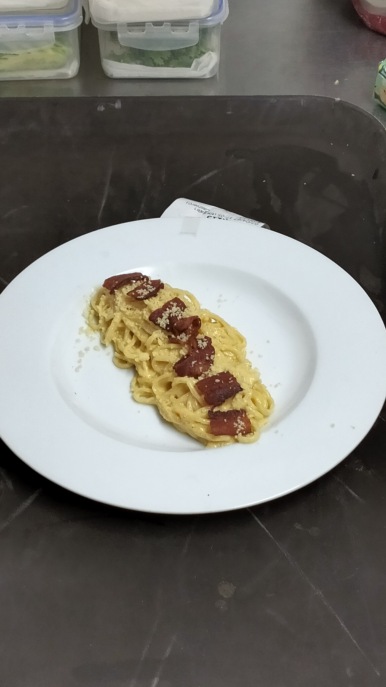
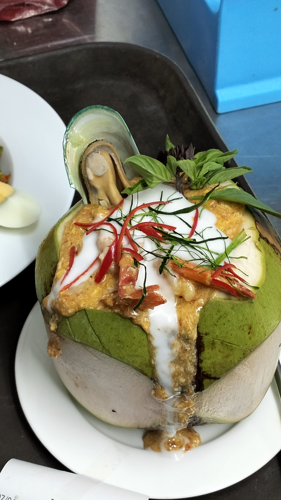
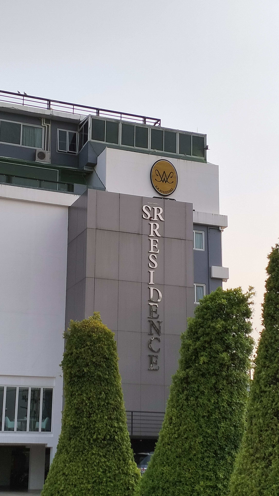
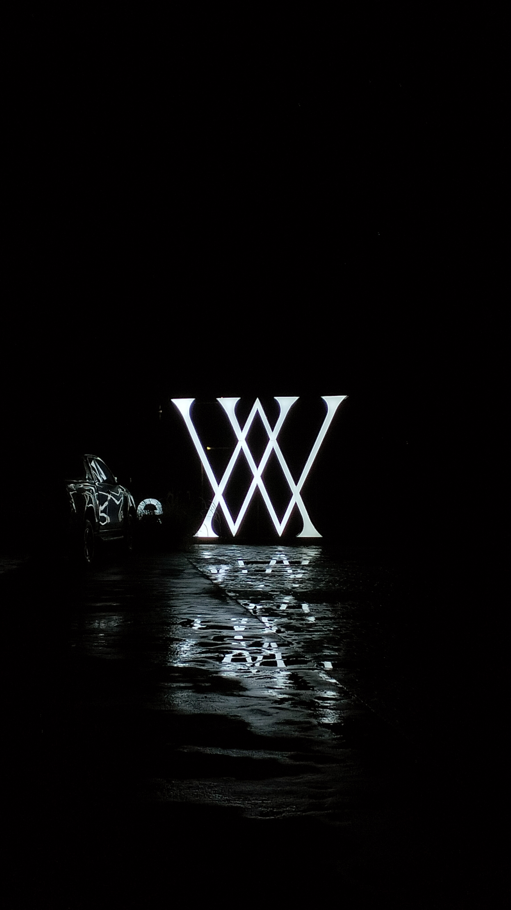
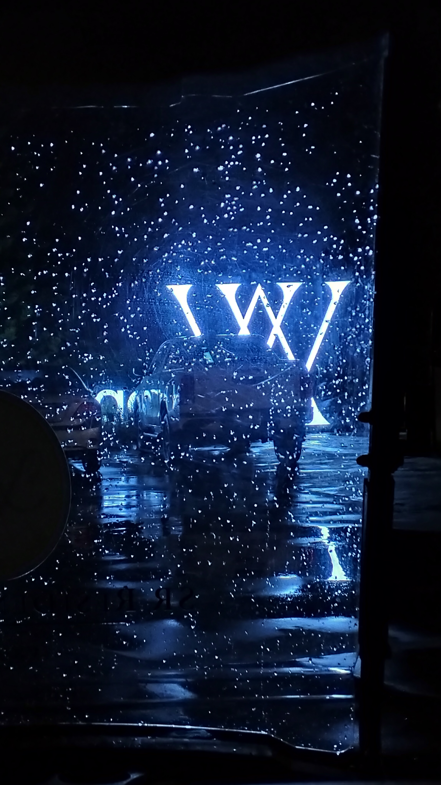
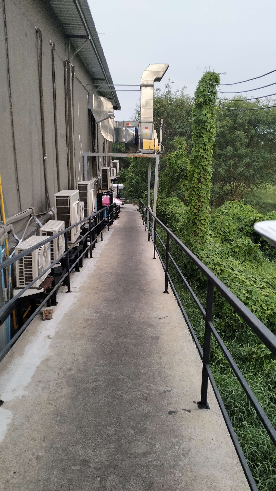
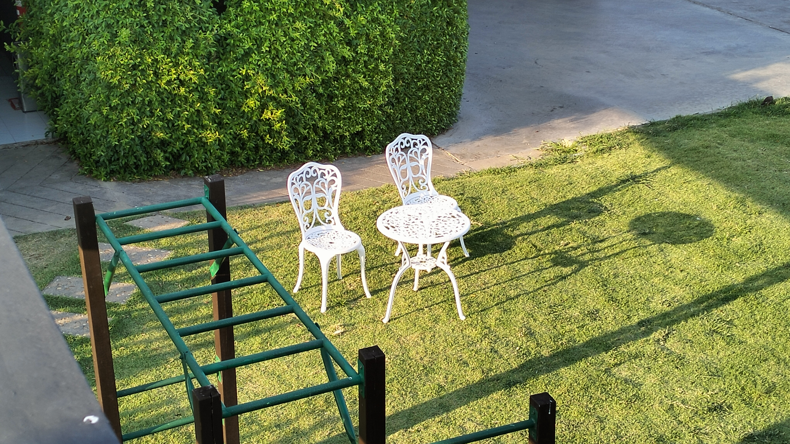
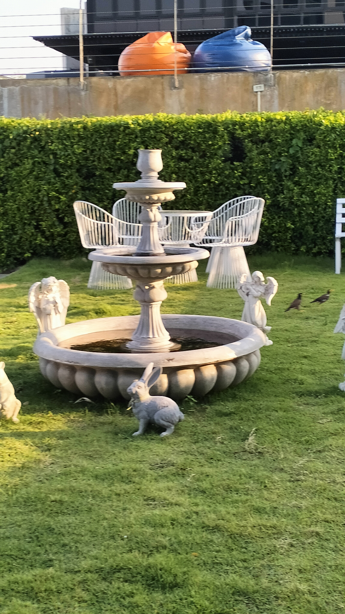

Experience
back
*คำอธิบายหากต้องการย้อนหน้ากลับ โปรดชี้เมาส์ไปที่หัวข้อเรื่องและกด back*
สปาเก็ตตี้ชวนหิว ที่เชฟครัวอาหารต่างชาติเป็นคนทำ น่ากินมากและอร่อยด้วย แต่ใครจะรู้ว่ากว่าจะมาเป็นจานนี้ได้ ต้องผ่านอะไรมาบ้างนะ
ตอนแรกที่อยู่ในกะทะก็ดูเป็นห่อหมกธรรมดานะ ทำไมกันนะเพียงแค่เปลี่ยนภาชนะและแต่งเติมนิดเดียวกับสวยงามได้ขนาดนี้ คนเราเพียงเปลี่ยนแปลงสิ่งต่างๆ เปลี่ยนสถานที่ สภาพแวดล้อม และเพิ่มศักยภาพสักหน่อย
จะสวยงามเหมือน ห่อหมกมะพร้าวอ่อนนี้รึป่าว
พะแนงเมนูโปรด ทั้งๆที่เป็นเนูโปรดแท้ๆ แต่พอได้กินบ่อยๆแล้ว ทำไมถึงเบื่อนะ หรือถึงเวลาแล้วที่เราต้องเปลี่ยนมนูโปรด
ตึกของโรงแรมที่สวยงามเงียบสงบกับครัวที่วุ่นวายที่อยู่ข้างล่าง มันน่าสนใจนะที่สองอย่างในตึกเดียวกันอารมณ์ต่างกันกับมีจุดเชื่อมกัน คือความเป็นระบบและระเบียบ
เชื่อไหมเราขับรถกอล์ฟผ่านป้ายนี้บ่อยมาก แต่พอตกกลางคืนแล้วฝนตก กลับสวยงามมากกว่าเดิมอีก เราอาจจะเป็นแบบนั้นก็ได้นะ เมื่อโอกาศมาถึงจะเผยสิ่งที่สวยงามมากที่สุดออกมา
ทั้งๆเป็นที่ๆเดียวกัน เพียงต่างมุมกลับทำให้อารมณ์ต่างกันขนาดนี้เลยหรอ เพียงแค่มองจากบางสิ่งที่บดบัง และโทนสีที่เปลี่ยนไป ก็ทำให้รู้สึกเหงาได้ขนาดนี้ อย่าลืมละ อย่าให้อะไรมาบดบัง และ แปรเปลี่ยนอารมณ์อันสดใสของเราได้นะ
ทางเดินขาลงของอีกครัวที่ดูหรูกลับเป็นทางที่ดูเรียบง่าย แต่จะมีใครรู้ไหมนะว่าขาขึ้นมามันเหนื่อยกว่าขาลง พยายามเข้าละ แต่อย่าลืมที่จะประคองตัวเองไม่ให้ลงไปเพราะมันง่ายกว่าที่จะลดระดับตัวเองลงไปหาอะไรสักอย่าง
แสงแดด เก้าอี้ ที่พึ่งเพิ่มเข้ามา กลับทำให้พื้นที่สีเขียวนี้ดูสวยงามกว่าเดิมอีก ถึงจะทำให้พื้นที่น้อยลงก็เถอะ ความสวยวามของความสัมพันธ์คงเหมือนกันเนอะ เราต้องให้พื้นที่บ้าง ลดบางอย่างลง แต่มันทำให้เราสวยงามกว่าเดิมอีก
น้ำพุที่สวยงามหรอ เปล่าแอ่งน้ำ แล้วไหนละน้ำพุ สงสัยเป็นเพียงแอ่งน้ำรุปแบบน้ำพุละมั้ง
เปล่าหรอกเครื่องมันยังไม่ทำงานมันจะสวยงามได้ไง

ต้นไม้ระหว่างทาง ทั้งๆที่ไม่มีพื้นที่ให้เติมโตแท้ๆ แกยังจะสามารถยืนหยัดแม้จะโดนแย่งสารอาหารจากต้นไม้ใหญ่ได้อีกนะ แถมยังสวยงามอีกด้วย เก่งจริงๆ